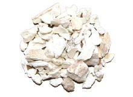
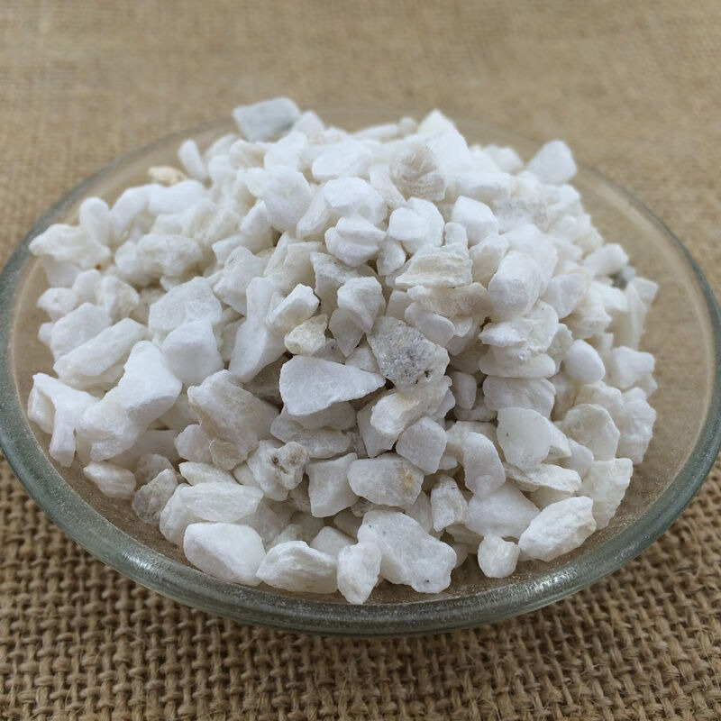
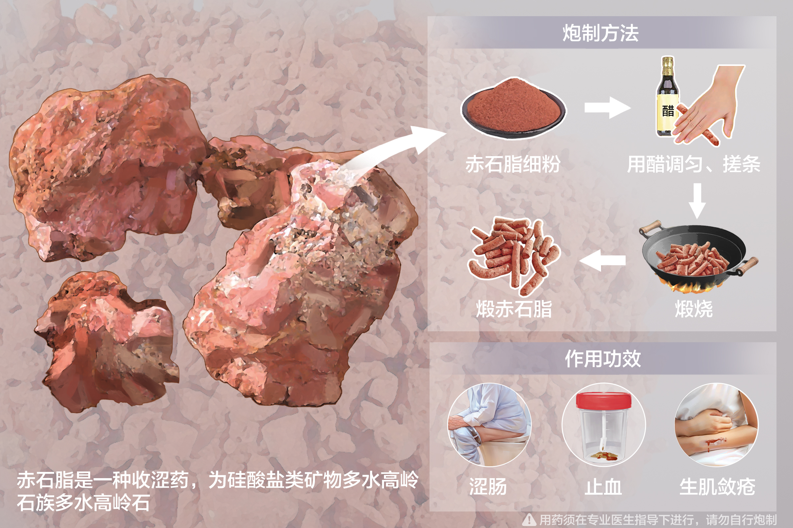

雌黄
具有解毒、杀虫、燥湿止痒的功效。

磁石
具有平肝息风、镇静安神的作用。
自然铜
用于跌打损伤、瘀血肿痛。
铅丹
有清热解毒、收敛止血的功效。
密陀僧
用于清热解毒、燥湿止痒。
炉甘石
具有清热解毒、明目退翳的功效。
硫磺
用于外用消毒、杀虫。
赭石
有平肝息风、清热解毒的作用。
龙骨
用于安神定惊、收敛止血。
龙齿
具有安神镇惊、清热解毒的功效。
琥珀
用于安神、活血化瘀。
金精石
有清热解毒、平肝息风的作用。
银精石
用于清热解毒、平肝息风。
铜绿
具有清热解毒、燥湿止痒的功效。
紫石英
用于镇惊安神、平肝息风。
白石英
有清热、安神、平肝的作用。
花蕊石
用于清热解毒、止血。
青礞石
有清热解毒、平肝息风的功效。
阳起石
用于温阳助火、温中散寒。
云母
具有清热解毒、平肝息风的作用。
石膏
用于清热泻火、生津止渴。
滑石
有清热利湿、通淋的作用。


硇砂
用于消积化瘀、软坚散结。

铁落
用于清热解毒、止血。
海浮石
具有清热解毒、软坚散结的功效。
代赭石
一种铁矿石，用于清热解毒。
硫酸铝钾
用于收敛止血、止泻。
钟乳石
用于治疗阳痿、遗精、虚劳咳嗽等。
血余炭
具有止血、散瘀的功效。

铅霜
具有清热解毒、收敛止血的功效。
赤石脂
这是一种含有铁、铝、硅等矿物质的赤色粘土，传统上用于止血、收敛、生肌，常用于治疗外伤出血、溃疡不敛等。
铁粉
通常由铁制成，用于中药材，具有消炎、止痛的作用。
紫草茸
有清热解毒、活血化瘀的作用。
玛瑙
用于安神、活血化瘀。